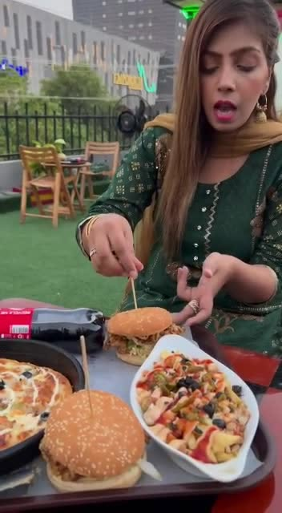

▶
Rooftop Platter & Ambiance Reel
Short-form vertical reel filmed on the Block H-2 rooftop overlooking Emporium Mall—showcasing loaded burgers, specialty pan pizza, and baked pasta to drive weekend foot traffic and DM bookings.
Increasing real-world customer footfall and turning a Johar Town rooftop café into a 20K+ organic community and live-screening hub.

Short-form vertical reel filmed on the Block H-2 rooftop overlooking Emporium Mall—showcasing loaded burgers, specialty pan pizza, and baked pasta to drive weekend foot traffic and DM bookings.
High-retention short-form Reels and creator collaborations built around four repeatable pillars: Cappuccino & Coffee Rituals, Desperado Steak & Platter Deals, Live Cricket Match Rooftop Screenings, and Customer Story Reposts.
Open @gloriacupcafe Instagram Feed ↗Real-world dining footfall and Instagram Reel reach compounded month over month by pairing food-sizzle hooks with live match screening promos.
Cumulative Instagram community expansion alongside weekly table reservation DMs
Share of DM reservations, Foodpanda orders, and walk-in rooftop traffic
Located on a rooftop opposite Emporium Mall in Johar Town, Lahore, Gloria Cup Café needed more than static menu posts—it needed to capture the energy of live cricket match screenings, sizzling Desperado Steaks, loaded pizza platters, and evening cappuccinos to drive real-world customer footfall and packed tables.
I architected a lifestyle- and food-first social engine for @gloriacupcafe built around high-retention rooftop Reels, food creator collaborations, deal-driven carousels, and match-day screening promos that directly increased daily customer footfall and table reservations.
Significantly increased daily customer footfall and weekend rooftop table bookings while scaling the brand’s organic social footprint past 20,000+ engaged local foodies across platforms.
Core production capabilities and deliverables executed in this workflow: